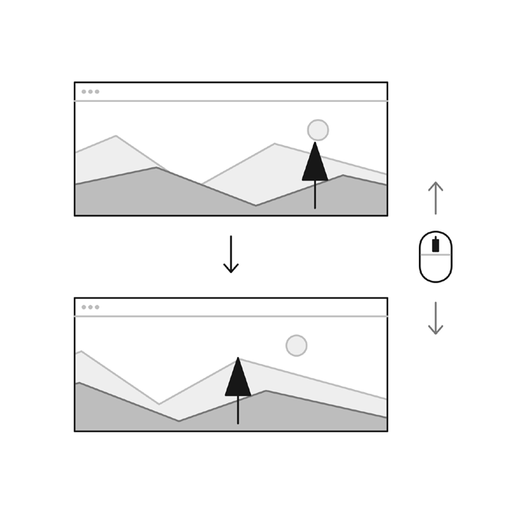
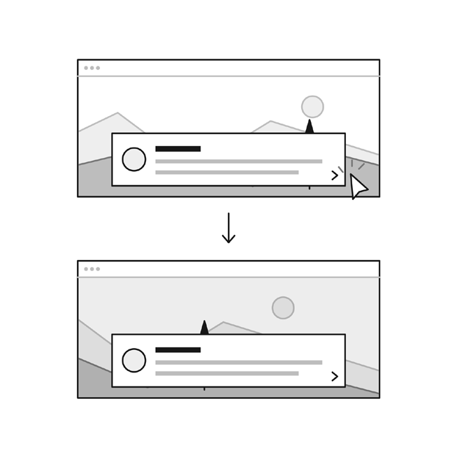
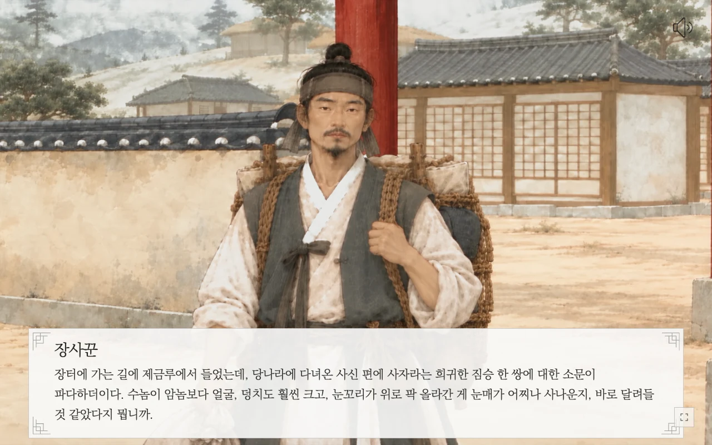
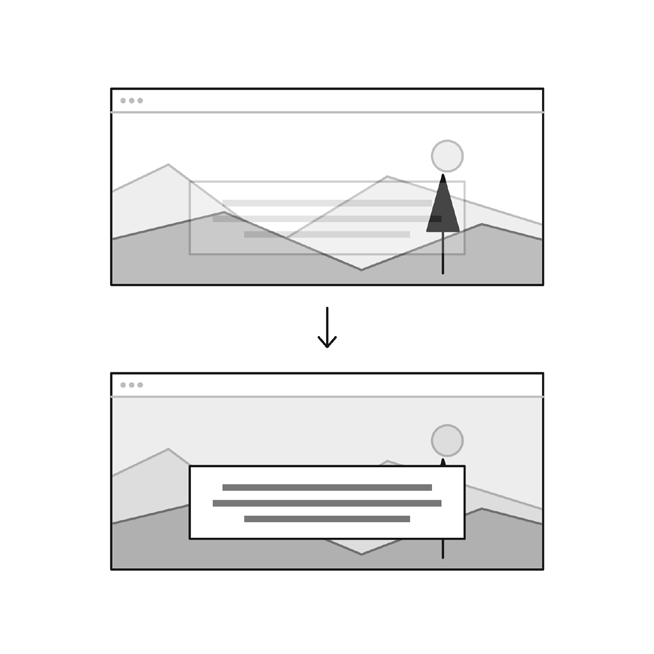

Story · 05
Story 웹 구현
사용 도구 · Codex · HTML · CSS · JavaScript
Codex를 활용해 영상 재생, 대사 패널, 내레이션을 웹의 조작 흐름으로 연결했습니다. 인물에게 다가가 이야기를 듣고, 거기서 얻은 단서를 Index의 3D 모델에서 확인하도록 구성했습니다.
01 / INTERACTION
이동과 대화를 연결한 방식
머무는 시간을 정하는 스크롤
장면을 살펴보고 대사를 읽는 데 필요한 시간은 사람마다 다릅니다. 관람객이 이동 속도와 머무는 시간을 정할 수 있도록 영상 재생을 스크롤에 연결했습니다. 모바일에서는 화면을 아래에서 위로 쓸어 올려 다음 장면으로 이동할 수 있습니다.

클로즈업과 대사 패널
주요 인물에게 다가가면 화면이 페이드아웃된 뒤 클로즈업 장면으로 전환되도록 했습니다. 이때 대사 패널을 함께 표시해, 소리를 켜지 않아도 인물의 말을 읽으며 내용을 파악할 수 있게 했습니다.


상황을 짚는 내레이션
공주목을 처음 접하는 관람객을 위해 장면의 배경과 상황을 설명하는 내레이션 패널을 넣었습니다. 인물의 대사만으로 전달하기 어려운 맥락을 짚고, 이야기에서 얻은 단서를 Index에서 살펴보는 흐름으로 이어지도록 구성했습니다.

02 / TESTING
피드백을 반영한 조작 조정
스크롤과 재생 속도
테스트 과정에서 스크롤 한 번에 약 2초 분량의 영상이 재생되도록 조정했습니다. 한 인물에서 다음 인물까지 약 5~9회의 스크롤로 이동할 수 있도록 재생 구간을 맞췄습니다.
모바일 터치 조작
QR 코드로 접속하는 상황을 고려해 아이폰에서 터치 조작을 적용했습니다. PC의 스크롤 대신 화면을 아래에서 위로 쓸어 올리는 동작으로 장면을 넘기도록 했습니다.
로딩 상태 안내
첫 화면이 늦게 나타나면 사용자가 사이트가 멈췄다고 여길 수 있었습니다. 콘텐츠를 불러오는 중임을 알 수 있도록 로딩 안내를 표시하는 방안을 개선 사항으로 정리했습니다.